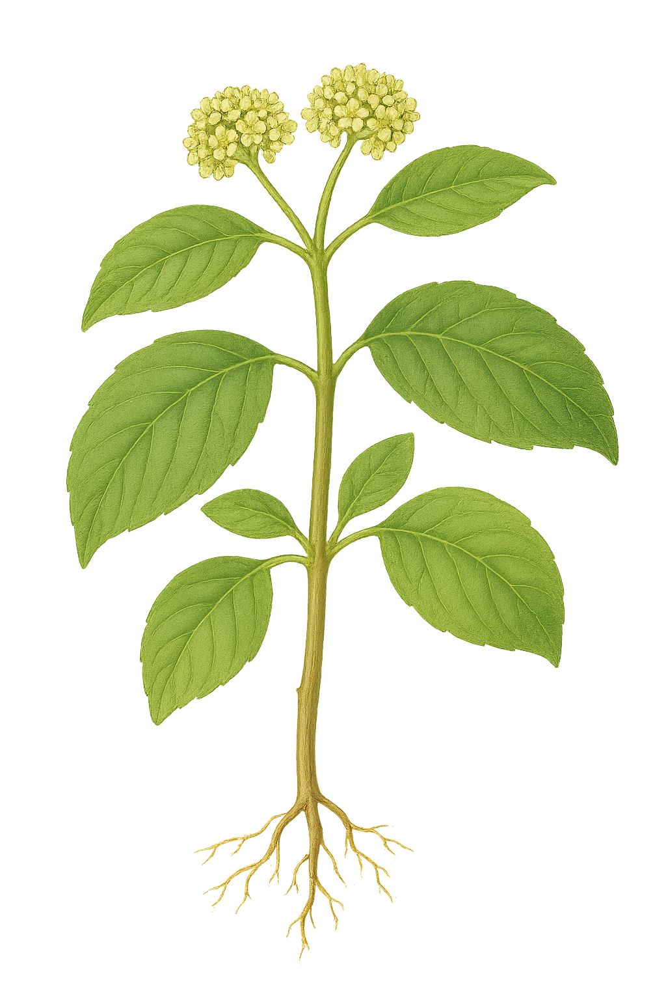

Peridiscaceae
(No common name widely used)
Peridiscaceae is a small family of flowering plants in the order Saxifragales, consisting of 4 genera and about 11 species of trees and shrubs. The family exhibits a remarkable disjunct distribution, with two genera found in tropical West Africa (Soyauxia, Medusandra) and two in northern South America (Peridiscus, Whittonia). It represents one of the earliest diverging lineages within the Saxifragales.
Overview
Peridiscaceae is a small but evolutionarily significant family, notable for its highly fragmented geographic range spanning tropical Africa and South America. This distribution pattern suggests an ancient origin, likely dating back to when these continents were closer together (Gondwana). The family now includes genera previously placed elsewhere; Medusandra was formerly in its own family (Medusandraceae), and the placement of Soyauxia was uncertain before molecular data linked them.
The family consists of woody plants (trees and shrubs) typically found in tropical rainforests. They have alternate, simple leaves, often with stipules. Flowers are generally small, often lack petals, and possess a prominent nectar disc surrounding the superior ovary. Fruit types differ between the African and South American genera, being capsules or drupes respectively.
Phylogenetically, Peridiscaceae occupies a key position as one of the basalmost lineages in the order Saxifragales, possibly sister to all other families in the order. This makes it important for understanding the early evolution and diversification of this major eudicot group.
Quick Facts
- Scientific Name: Peridiscaceae Kuhlm.
- Common Name: None widely used
- Number of Genera: 4 (Peridiscus, Whittonia, Soyauxia, Medusandra)
- Number of Species: Approximately 11
- Distribution: Disjunct: Tropical West Africa and Northern South America (Amazon basin).
- Evolutionary Group: Eudicots - Core Eudicots - Saxifragales
Key Characteristics
Characteristics can vary somewhat between the African and South American genera:
Growth Form and Habit
Evergreen trees or shrubs.
Leaves
Leaves are arranged alternately (spirally). They are simple, with margins usually entire, sometimes toothed (Soyauxia). Stipules are typically present; in Peridiscus and Whittonia, they are large, intrapetiolar (fused between petiole and stem), and enclose the terminal bud, leaving characteristic scars. In Soyauxia and Medusandra, stipules are smaller or possibly absent. Glandular teeth or patches may occur on the leaf blade or petiole.
Inflorescence
Flowers are borne in axillary spikes, racemes, or panicles.
Flowers
Flowers are small, actinomorphic (radially symmetrical), and usually bisexual (except possibly unisexual in Medusandra, plants then dioecious?).
- Sepals: 4-7, small, free or fused at the base, persistent or deciduous.
- Petals: Usually absent (apetalous). Petals are reportedly present only in Soyauxia (4-5, small).
- Androecium: Stamens are numerous (12 to many) in Peridiscus and Whittonia. In Soyauxia, stamens are 10. In Medusandra, there are 5 fertile stamens alternating with 5 distinctive, long, hairy staminodes. Filaments are distinct. Anthers are small, often opening by pores or short slits.
- Nectar Disc: A prominent, annular (ring-like) or lobed intrastaminal nectar disc is usually present, surrounding the base of the ovary.
- Gynoecium: The ovary is superior, composed of 3-4 (rarely up to 7) fused carpels (syncarpous), forming a single locule (unilocular). Placentation is apical or parietal (sometimes interpreted as basal?), with few (2-many) ovules pendulous from the apex or attached to the walls. Styles are distinct and short, or fused into a single column (Peridiscus); stigmas are small, capitate or pointed.
Fruits and Seeds
Fruit type differs geographically: a fleshy drupe in the South American genera (Peridiscus, Whittonia); a dry, 1-seeded capsule that splits open (dehiscent) in the African genera (Soyauxia, Medusandra). Seeds are relatively large, endosperm present or absent.
Chemical Characteristics
Information is limited. Ellagic acid and tannins have been reported.
Field Identification
Identifying Peridiscaceae requires geographic context (W Africa or N South America) and attention to specific features:
Primary Identification Features
- Geographic Location: Tropical West Africa OR Northern South America (Amazon region).
- Habit: Trees or shrubs.
- Leaves: Alternate, simple, entire or toothed, often with stipules (sometimes large and intrapetiolar, leaving scars).
- Flowers: Small, actinomorphic, usually apetalous (except Soyauxia), with a prominent nectar disc. Stamens numerous OR 10 OR 5+5 staminodes.
- Ovary: Superior, unilocular.
- Fruit: Drupe (South America) OR Capsule (Africa).
Secondary Identification Features
- Stipule Scars: Prominent ring-like scars on twigs from large stipules (Peridiscus, Whittonia).
- Staminodes (Medusandra): Presence of 5 distinctive long, hairy staminodes alternating with fertile stamens.
- Habitat: Tropical rainforests.
Seasonal Identification Tips
- Flowering/Fruiting Period: Essential for confirming identification, especially distinguishing genera based on stamen number/staminodes and fruit type. Check local records.
- Vegetative State: Alternate simple leaves with stipules (especially large intrapetiolar ones in S. America) on a tree/shrub in the correct region are suggestive but require floral/fruit data.
Common Confusion Points
Distinguishing from other families in their respective regions:
- In South America: Peridiscus/Whittonia might be confused with families having alternate simple leaves and stipules (e.g., some Chrysobalanaceae, Euphorbiaceae relatives). The combination of large intrapetiolar stipules, apetalous flowers with numerous stamens and a prominent disc, unilocular ovary, and drupe fruit is key.
- In West Africa: Soyauxia/Medusandra need differentiation from other trees/shrubs with alternate simple leaves (e.g., some Connaraceae, Euphorbiaceae relatives, Irvingiaceae). Floral details (petal presence in Soyauxia, stamen/staminode number in Medusandra) and the capsular fruit are important.
- General: The combination of features (stipules, apetalous flowers, disc, unilocular ovary, fruit type) within the specific geographic context is crucial.
Field Guide Quick Reference (W Africa / N S America)
Look For:
- Tree or shrub
- Leaves: Alternate, simple, stipulate
- Flowers: Small, actinomorphic, usually apetalous
- Nectar disc prominent
- Stamens: Variable (5+5 to numerous)
- Ovary: Superior, unilocular
- Fruit: Drupe (S Am) or Capsule (Afr)
Key Distinctions:
- Basal lineage in Saxifragales
- Highly disjunct distribution
- Combination of stipules, often apetalous flowers, prominent disc, unilocular ovary
- Specific stamen/staminode structure in Medusandra
- Large intrapetiolar stipules in S American genera
Notable Examples (The Four Genera)
The family comprises four genera, two in each disjunct region:

Peridiscus
(e.g., P. lucidus)
A genus with one or two species of trees found in the Amazon basin of northern South America. Characterized by large, intrapetiolar stipules enclosing the bud, alternate simple leaves, spikes of small apetalous flowers with numerous stamens and a prominent disc, and drupaceous fruits.

Whittonia
(e.g., W. guianensis)
A monotypic genus known only from Guyana in South America, very similar vegetatively to Peridiscus with large intrapetiolar stipules. It differs primarily in floral details, possibly having fewer carpels. It is poorly known and may be extinct.

Soyauxia
(e.g., S. gabonensis)
A genus of about 7 species of shrubs and trees found in tropical West Africa. Unlike other genera, it typically possesses small petals (4-5). Flowers have 10 stamens. The fruit is a 1-seeded capsule.

Medusandra
(e.g., M. richardsiana)
A genus with two species of trees from West Africa (Cameroon, Gabon). Formerly placed in its own family, Medusandraceae. Flowers are apetalous and distinctive for having 5 fertile stamens alternating with 5 long, hairy staminodes resembling Medusa's hair. Fruit is a 1-seeded capsule.
Phylogeny and Classification
Peridiscaceae occupies a crucial position within the order Saxifragales, representing one of the earliest diverging lineages in this major eudicot group. Molecular phylogenetic studies consistently place Peridiscaceae near the base of the Saxifragales tree.
It is often resolved as the sister group to all other families in the Saxifragales, or sometimes as sister to Paeoniaceae, with this combined clade being sister to the rest. This basal position means its characteristics might reflect ancestral traits for the order. The family's current circumscription includes Medusandra (formerly Medusandraceae), whose placement was uncertain before molecular data strongly linked it with Soyauxia, Peridiscus, and Whittonia.
Position in Plant Phylogeny (APG IV)
- Kingdom: Plantae
- Clade: Angiosperms (Flowering plants)
- Clade: Eudicots
- Clade: Core Eudicots
- Order: Saxifragales
- Family: Peridiscaceae (incl. Medusandraceae)
Evolutionary Significance
Peridiscaceae is highly significant for understanding plant evolution:
- Basal Saxifragales Position: Its status as one of the earliest diverging lineages provides crucial information about the ancestral traits and early evolutionary steps of the entire Saxifragales order.
- Biogeography: The extreme Africa-South America disjunction is a classic signature of Gondwanan vicariance, suggesting the family originated before the final separation of these continents and has persisted in isolated tropical refugia.
- Phylogenetic Discovery: The molecular placement of the morphologically distinct Medusandra within Peridiscaceae highlights how DNA data can reveal unexpected evolutionary relationships and necessitate taxonomic revisions.
- Morphological Diversity: Despite its small size, the family shows considerable variation (e.g., petal presence/absence, stamen number, fruit type) between its geographically separated genera.